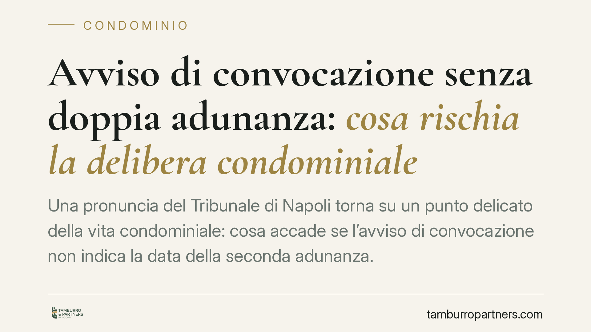

Avviso di convocazione senza doppia adunanza: cosa rischia la delibera condominiale
Una pronuncia del Tribunale di Napoli torna su un punto delicato della vita condominiale: cosa accade se l'avviso di convocazione non indica la data della seconda adunanza. La delibera non è automaticamente annullabile, ma l'assemblea non può avvalersi delle maggioranze ridotte previste per la seconda convocazione. Un distinguo con conseguenze operative concrete per amministratori e condòmini.

Il caso
Il Tribunale di Napoli, sesta sezione civile, con la sentenza n. 5036/2025 (riferimento 21 maggio 2025) ha affrontato una questione ricorrente: la validità della delibera assunta quando l'avviso di convocazione non riporta la data della seconda adunanza.
La risposta dei giudici napoletani è articolata. La mancata indicazione della doppia convocazione non rende di per sé annullabile la delibera. Produce però un effetto preciso: l'assemblea non può applicare i quorum ridotti previsti per la seconda convocazione. Resta valida solo la delibera adottata con le maggioranze più elevate richieste per la prima adunanza.
Inquadramento normativo
Il riferimento è all'articolo 1136 del codice civile, che disciplina la costituzione dell'assemblea e le maggioranze necessarie per deliberare. In prima convocazione servono maggioranze più alte: l'assemblea è regolarmente costituita con la partecipazione della maggioranza dei partecipanti che rappresenti almeno i due terzi del valore dell'edificio (i cosiddetti millesimi). In seconda convocazione i quorum sono più bassi, per favorire l'operatività dell'organo anche in presenza di assenze.
L'articolo 66 delle disposizioni di attuazione del codice civile regola invece il contenuto dell'avviso di convocazione. La norma prevede, in caso di seconda convocazione, l'indicazione del relativo giorno e ora, che non può coincidere con la prima e deve svolgersi entro dieci giorni, ma non prima del giorno successivo.
La logica della decisione è questa: la seconda convocazione, con le sue maggioranze agevolate, è un beneficio che presuppone un preciso onere informativo verso i condòmini. Se quell'informazione manca, il beneficio non opera. Non si colpisce la delibera con l'annullamento, ma si nega all'assemblea la possibilità di deliberare con quorum ridotti.
Implicazioni pratiche
Per l'amministratore la conseguenza è immediata. Un avviso incompleto, privo della data di seconda convocazione, non azzera l'assemblea ma la vincola a operare come se la seconda convocazione non esistesse. In concreto, le delibere potranno reggere solo se adottate con le maggioranze più stringenti della prima adunanza.
Questo significa che molte decisioni assunte confidando nei quorum ridotti rischiano di risultare viziate. Pensiamo a delibere approvate con una partecipazione contenuta: formalmente verbalizzate come seconda convocazione, ma in realtà sostenute da maggioranze insufficienti per la prima.
Per il condomino che intende contestare, il distinguo è altrettanto rilevante. Non basta eccepire la mancata indicazione della doppia adunanza per ottenere l'annullamento. Occorre verificare se la delibera impugnata raggiungesse o meno i quorum della prima convocazione. Se li raggiungeva, la contestazione sul solo vizio dell'avviso difficilmente avrà successo.
Va ricordato che le delibere annullabili devono essere impugnate entro trenta giorni, ai sensi dell'articolo 1137 del codice civile. Il termine decorre dalla deliberazione per i presenti dissenzienti o astenuti, e dalla comunicazione del verbale per gli assenti.
Cosa fare in concreto
- Verificate l'avviso prima dell'assemblea. Controllate che riporti data, ora e luogo sia della prima sia della seconda convocazione, nel rispetto dei termini dell'art. 66 disp. att. c.c.
- Calcolate i quorum effettivamente raggiunti. Prima di affidarsi alle maggioranze ridotte, verificate se la partecipazione consente di deliberare anche con i quorum della prima convocazione.
- Documentate in verbale presenze e millesimi. Un verbale che riporti con precisione teste e valori millesimali consente di dimostrare la tenuta della delibera a prescindere dalla convocazione applicata.
- Valutate la riconvocazione in caso di avviso difettoso. Se l'avviso è incompleto, può essere prudente riconvocare l'assemblea con avviso regolare, soprattutto per le decisioni che richiedono maggioranze elevate.
- Rispettate i termini di impugnazione. Chi intende contestare la delibera deve agire entro trenta giorni, previa verifica della reale fondatezza del vizio.
Osservazioni conclusive
La pronuncia conferma un orientamento attento alla sostanza: il vizio dell'avviso non produce effetti automatici di invalidità, ma incide sul regime delle maggioranze applicabili. Un approccio che premia la precisione nella gestione assembleare e, allo stesso tempo, impone al condomino un vaglio più rigoroso prima di avviare una contestazione.
---
*Contributo informativo a cura di Tamburro & Partners - Avv. Giuseppe Tamburro. Non costituisce parere legale.*
Ogni condominio ha una storia a sé.
Se gestisci un'amministrazione e vuoi un confronto su una specifica questione condominiale, scrivi allo studio. Ti rispondiamo entro un giorno lavorativo.